Memiliki ketertarikan kuat pada rekayasa perangkat lunak dan pengembangan web. Berpengalaman dalam pembuatan serta pengembangan sistem aplikasi web dari front-end hingga integrasi API. Dikenal sebagai pribadi yang analitis dan adaptif, siap menciptakan solusi teknologi informasi yang efisien dan dapat diandalkan bagi operasional bisnis.
PT. Juara Roti Indonesia, Klaten (Kontrak)
Kopma UPN "Veteran" Yogyakarta
Diundang sebagai pembicara pada pelatihan web programming dan rekayasa perangkat lunak. Membimbing peserta dari instalasi lingkungan kerja dasar hingga praktik pemrograman secara langsung.
SMP Negeri 1 Polanharjo, Klaten
Sevenpion (PT. Semesta Ruang Inovasi), Yogyakarta
NPCI Jawa Tengah • Sep - Okt 2025
Universitas Amikom Yogyakarta • Sep - Des 2024
Universitas Amikom Yogyakarta • Mei 2025
Amikom Computer Club (AMCC) • Feb 2025
Beberapa aplikasi dan prototipe yang pernah dikerjakan.
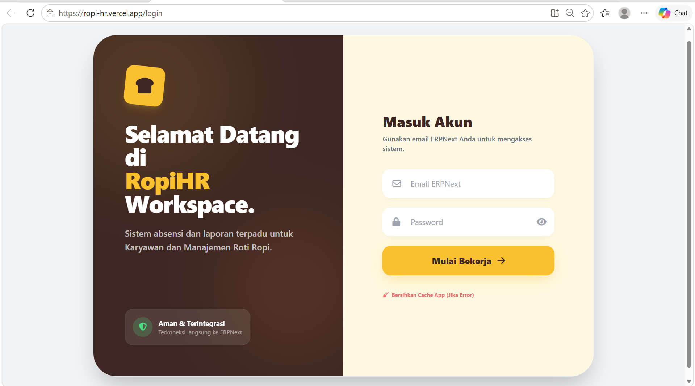
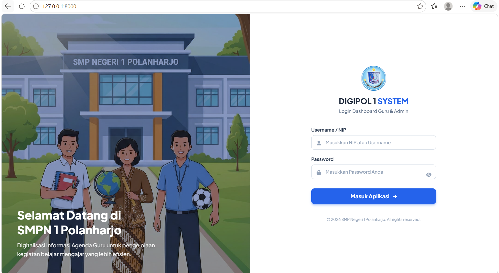
Aplikasi web untuk mendigitalisasi sistem pencatatan agenda dan jurnal harian guru SMP.
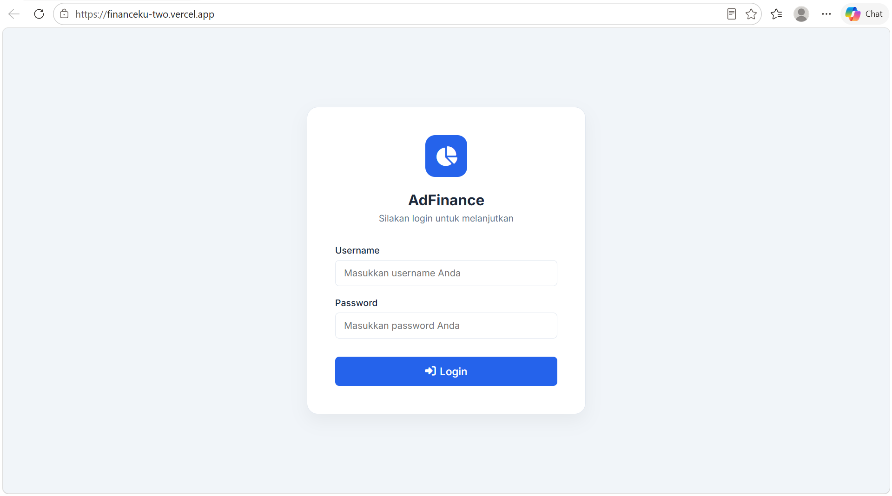
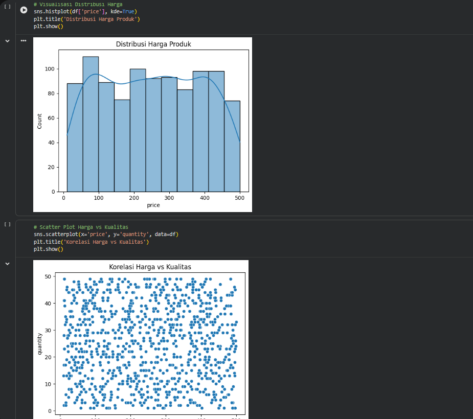
Script Python untuk transformasi data, cleaning, dan ekstraksi insight deskriptif awal.
Lihat Notebook →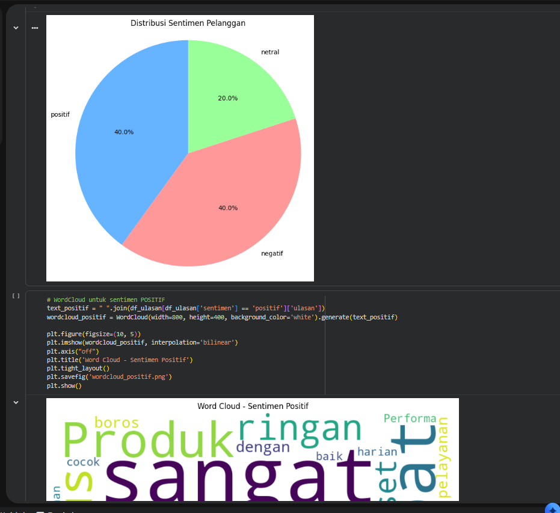
Grafik visualisasi pola dan tren menggunakan Matplotlib & Seaborn.
Lihat Notebook →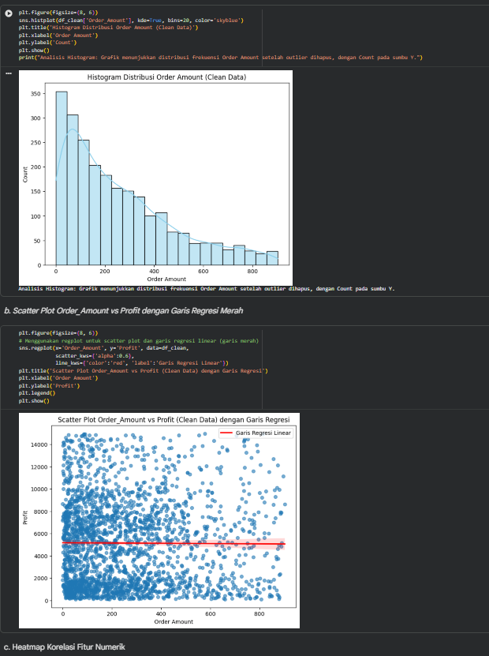
Teknik pembersihan data mendalam, penanganan missing values, dan feature engineering.
Lihat Notebook →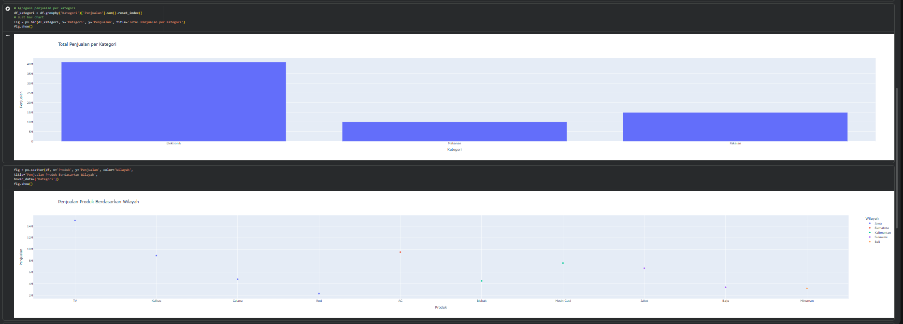
Preprocessing teks (cleaning, tokenisasi, stopword removal) dan eksperimen model klasifikasi sentimen.
Lihat Notebook →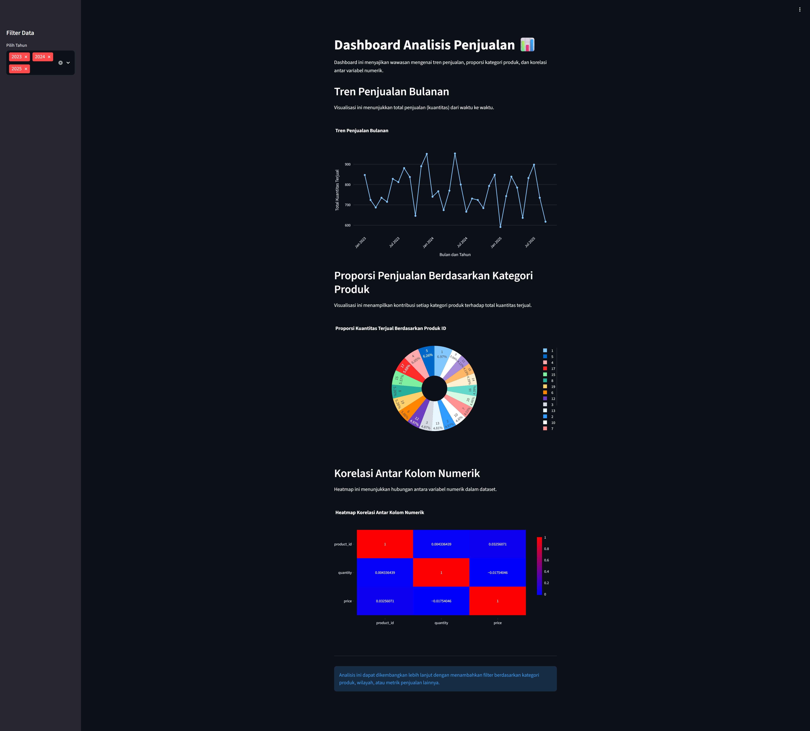
Pipeline lengkap dari Data Collection, EDA, hingga penyajian visualisasi interaktif Streamlit.
Lihat Notebook →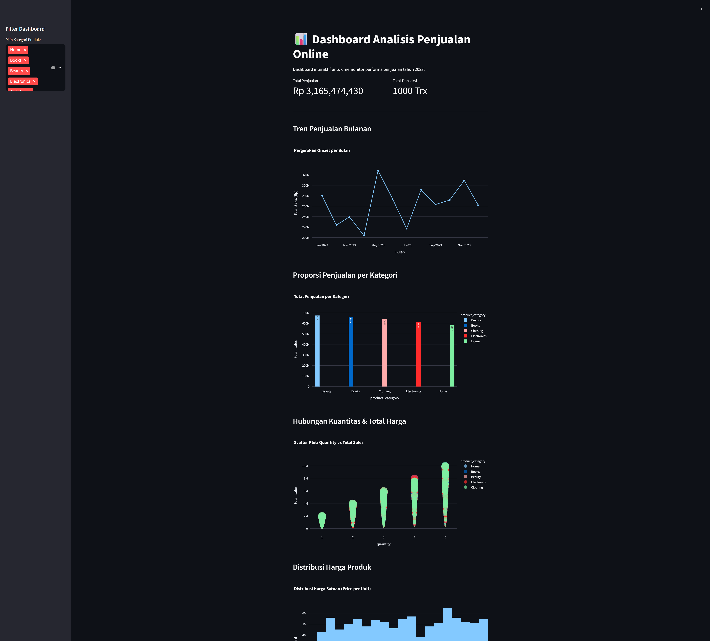
Projek komprehensif yang menguji kemampuan analisis dan evaluasi akurasi model klasifikasi.
Lihat Notebook →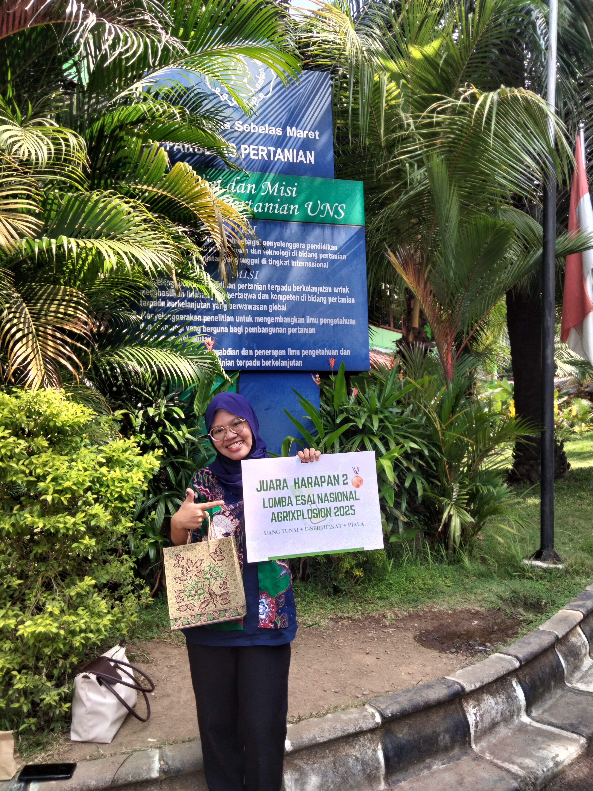
Universitas Sebelas Maret
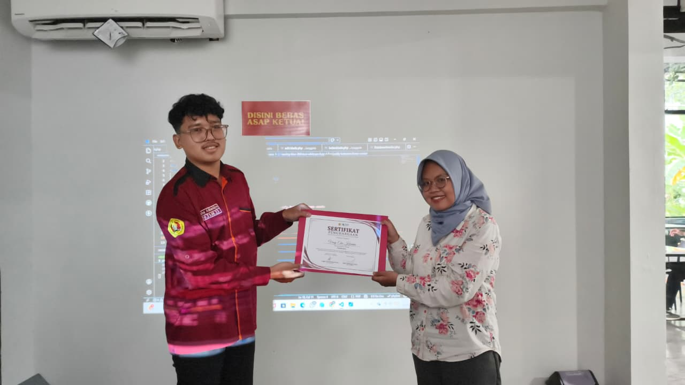
Pelatihan Web Programming Kopma UPN "Veteran" Yogyakarta
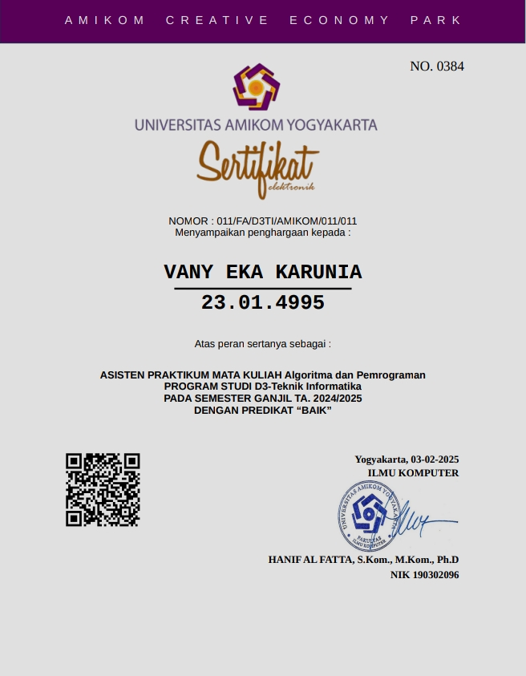
Universitas Amikom Yogyakarta
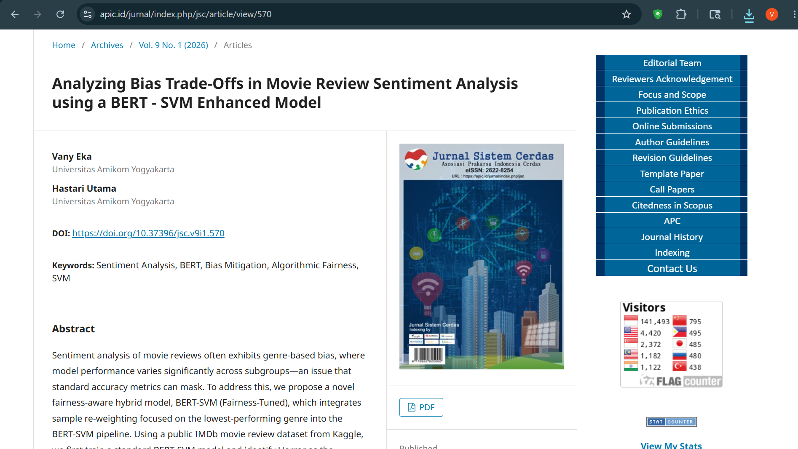
Penelitian Analisis Sentimen
Lihat Jurnal →